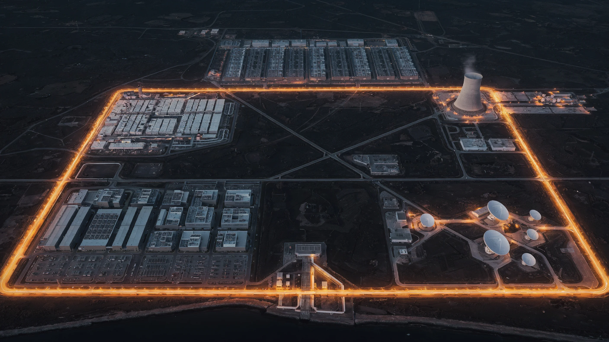
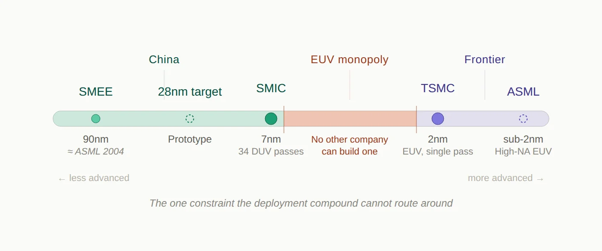

In February 2026, Chinese AI company Zhipu AI released GLM-5, a large language model trained entirely on Huawei Ascend chips — silicon fabricated by SMIC on a 7-nanometer process, using equipment the United States has spent three years trying to deny China access to. GLM-5 led on two of three frontier benchmarks and came within two points on the third — SWE-bench, where only GPT-5.2 scored higher.[1] The model that was supposed to be impossible is now competing at the frontier.
That result was not an anomaly. It was a data point in a pattern that Western analysis, organized around what Chinacannotaccess, has systematically failed to see.
Last week, ASPI updated its Critical Technology Tracker with the complete 2025 dataset. China now leads in high-impact research output in 69 of 74 critical technologies tracked — up from 57 of 64 in late 2024, and just 3 of 64 in the 2003–2007 period.[2] The trajectory is not a line. It is a steepening curve.
The standard response to these numbers is to recite what China still lacks: EUV lithography (the ultraviolet light technology that prints the smallest chip features — monopolized by the Dutch company ASML), top-end Nvidia GPUs, TSMC’s (Taiwan Semiconductor Manufacturing Company) most advanced nodes, the CUDA software ecosystem that locks AI developers to Nvidia hardware. Those constraints are real, and this piece will address them honestly. But the access-denial frame measures inputs. What it misses is output. China is deploying — at industrial scale, across semiconductors, AI models, cloud infrastructure, nuclear energy, satellite constellations, and export control evasion — a full-stack technological alternative. The six domains do not advance independently. They compound.
The West measures what China can’t get. China measures what it has shipped. The deployment record tells a story that the restriction narrative does not.
The Deployment Snapshot
Here is what China has deployed, domain by domain. None of these is the story alone. The story is what happens when all six feed each other.
Semiconductors.SMIC, China’s largest foundry, posted record revenue of $9.3 billion in 2025 using an older light-printing technology called DUV (deep ultraviolet) lithography at the 7-nanometer node — a brute-force approach requiring 34 printing passes where ASML’s newer EUV systems would need nine.[3] National chip production hit a record 484.3 billion units (mostly at legacy nodes), up 85.2 percent from 2020.[4] Huawei’s Ascend 910C delivers 60 percent of Nvidia’s H100 inference performance according to DeepSeek researchers — and the next generation is already arriving: Huawei claims its Atlas 350 accelerator card, equipped with the Ascend 950PR, delivers 2.8 times the performance of Nvidia’s H20 — the throttled chip Nvidia designed specifically to comply with US export limits.[5] In early 2026, Chinese authorities partially banned imports of the H200 itself, citing concerns over its tracing capabilities — the restricted country rejecting the restricted product.[6] The chip cannot compete at frontier training. But for inference — the workload that matters for deployment — it is sufficient. And sufficiency at scale, not parity per chip, is the metric that determines outcomes.
AI models.Between February 2025 and February 2026, Chinese models accounted for 41 percent of all Hugging Face downloads versus 36.5 percent for American models — a complete inversion from two years earlier.[7] Alibaba’s Qwen family overtook Meta’s Llama as the most downloaded model series. Sixty-three percent of all new fine-tuned models on Hugging Face in September 2025 were built on Chinese base models.[8] On benchmarks, multiple Chinese models now match or exceed Western frontier performance — and the pricing is the structural signal: comparable flagship APIs are modestly cheaper, but Chinese open-weight models available for self-hosting at near-zero cost have no Western equivalent at the same quality tier.[9]
Cloud.China’s cloud market reached approximately $50 billion in 2025, up over 20 percent year over year.[10] Alibaba Cloud commands roughly a third of the domestic market and has sustained triple-digit AI revenue growth for ten consecutive quarters. But the most striking number belongs to ByteDance’s Volcano Engine, which captured approximately half of China’s public cloud large-model invocations in the first half of 2025 — more than Alibaba and Baidu combined — processing 30 trillion tokens daily.[11] The domestic cloud market is self-contained: Chinese chips running Chinese models on Chinese infrastructure powered by a Chinese grid. The US Big Three generate roughly six times more cloud revenue globally.[12] But revenue measures commercial scale. What matters for the thesis is strategic autonomy — and the Chinese cloud stack has it.
Nuclear energy.China’s HTR-PM at Shidao Bay achieved commercial operation in December 2023 — the world’s first Generation IV reactor.[13] Linglong One, a 125-megawatt pressurized water reactor on Hainan Island, completed its steam turbine test in December 2025 and is on track for commercial operation in the first half of this year — positioning it as the world’s first land-based commercial small modular reactor.[14] China has approximately 38 reactors under construction — roughly half the global total.[15] Its 61 operating reactors now surpass France’s 57, and the fleet is projected to overtake the United States’ 94 by approximately 2030.[16]
Space.China has filed applications with the International Telecommunication Union for approximately 51,000 low-Earth-orbit satellites across at least six constellation programs — including the three largest: GuoWang, Qianfan, and Honghu-3.[17] GuoWang, the state-backed broadband constellation, had approximately 163 satellites in orbit by mid-March 2026, following 20 launch missions, with a target of 310 by year-end.[18] Qianfan, backed by Shanghai, has launched 108 satellites and plans to launch 324 more in 2026.[19] Against Starlink’s 10,000-plus satellites and ten million subscribers, China lags by five to six years in deployment. But the launch cadence — 92 orbital missions in 2025, up 35 percent — and the GalaxySpace IPO filing announced this week suggest the deployment is accelerating, not plateauing.[20]
Enforcement.On March 19, a federal indictment was unsealed charging Supermicro co-founder Yih-Shyan Liaw and two associates with conspiring to divert $2.5 billion in AI servers to China through a Southeast Asian intermediary.[21] Workers used hair dryers to peel serial-number stickers off servers, swapping them for stage dummy units for auditors. When a broker sent Liaw a news article about other chip smugglers being arrested, he replied with sobbing-face emojis — and kept shipping.[22] The export controls have been in place since October 2022. The scheme ran for roughly two years before a single arrest. The enforcement model prosecutes after the fact — it does not intercept in real time. By the time an indictment is unsealed, the diverted hardware is already a generation behind the frontier.
None of these findings, taken individually, is unknown. Each has been reported. What has not been assembled is the picture they form together — and why the aggregate changes the assessment.
The Compound
The reason single-domain analysis yields systematically incorrect conclusions about China’s competitive position is that the six domains do not operate independently. They compound.
The mechanism is a closed loop, and the cloud is the integration layer where you can watch it operate.
Alibaba Cloud runs Qwen models on Ascend chips and serves over 90,000 enterprise clients through its Model Studio platform.[23] ByteDance’s Volcano Engine runs Doubao on infrastructure that includes both Nvidia hardware (accessed through offshore Malaysian clusters) and an expanding domestic Ascend deployment.[24] These are not research demonstrations. They are production systems processing trillions of tokens per day — China’s total large-model invocations reached 536.7 trillion tokens in the first half of 2025 alone.[25] The revenue from these services funds the next training run on the next generation of domestic chips, which in turn funds the next foundry expansion. The loop feeds itself.
The pricing dynamics reveal how the compounding actually works. In May 2024, DeepSeek released V2 with API pricing of 1 yuan (approximately 14 cents) per million tokens. Baidu’s equivalent was charging 120 times more.[26] Within days, Alibaba slashed Qwen-Long pricing by 97 percent. Baidu made two model tiers free. ByteDance followed. By December 2024, ByteDance had dropped its Doubao vision model to $0.00041 per thousand tokens; Alibaba matched the price within two weeks.[27] The cascade was not irrational subsidization. It was the economic signature of the compounding mechanism: when the chip is domestic, the model is open-weight, and the cloud is your own, the marginal cost of inference approaches the cost of electricity. And China has more electricity than it needs.
The resulting pricing gap is visible at every tier. Flagship to flagship, OpenAI’s GPT-5.4 charges $2.50 per million input tokens; Alibaba’s Qwen-Max charges $1.60 — a modest gap that reflects comparable infrastructure costs.[28] But the Chinese ecosystem also offers what the Western ecosystem does not: open-weight models at near-zero cost. DeepSeek’s V3 charges $0.27 input and $1.10 output — and can be self-hosted for free. For a startup in Jakarta or a government agency in Riyadh, choosing between a $15-per-million-output-token proprietary API and a $1.10 open-weight alternative, the structural incentive is overwhelming. Some of that gap is competitive subsidization — Tencent’s own vice president has acknowledged that AI revenue is not yet scaling in China.[29] But the structural floor is real: when every layer of the stack is domestically owned, the cost basis is fundamentally lower. The subsidy can end, and the advantage persists.
Energy feeds the entire stack. China’s national grid operates with a reserve margin that Goldman Sachs estimates will reach 400 GW of spare generation capacity by 2030 — roughly triple the expected needs of the entire global data center fleet.[30] While American hyperscalers scramble for power, the PJM grid operator’s capacity auction fell 6,600 MW short in December 2025, and US transformer lead times run 143 weeks; Chinese data center operators procure domestically manufactured transformers in 48 weeks.[31] The “Eastern Data, Western Computing” initiative, launched in 2022 with over $28 billion invested to date, has established eight national computing hub nodes redistributing compute to renewable-rich western provinces.[32] It is the infrastructure equivalent of what hyperscaler nuclear announcements aspire to be, except it exists.
The satellite constellations provide a connectivity layer that is structurally significant for reasons that go beyond broadband. GuoWang and Qianfan are being built by companies that also serve as partners in China’s expanding cloud infrastructure across Southeast Asia, the Middle East, and Africa.[33] GalaxySpace — which filed for its IPO today — has demonstrated direct-to-cell satellite communication and established partnerships in Thailand, the UAE, Saudi Arabia, Indonesia, and Malaysia.[34] These are the same geographies where Huawei Cloud and Alibaba Cloud are building data centers and signing government contracts. The cloud and connectivity layers are converging on the same markets simultaneously.
The enforcement evasion lane — the $2.5 billion Supermicro scheme, the offshore compute clusters ByteDance operates in Malaysia, the stockpiled million-plus H20 chips Chinese companies acquired before the ban — functions as bridge technology.[35] Every leaked or legally accessed GPU buys time for the domestic stack to mature. But the bridge metaphor holds only if domestic training capability arrives within one GPU generation cycle. If it doesn’t, the compound’s inference layer rests on models trained on hardware it cannot replenish. By the time enforcement catches up to the diverted hardware, the domestic alternative has advanced another step. The bridge does not need to last forever. It needs to last until the loop closes — and for inference, that point may already have arrived.
Why It’s Working This Fast
The deployment velocity across six domains is not luck. It is the output of a system designed to produce exactly this result.
China graduates approximately 3.6 million STEM students per year — roughly five times the United States’ total across all degree levels.[36] The engineering pipeline alone produces 1.3 to 1.5 million graduates annually.[37] Since 2018, Chinese universities have established over 2,300 dedicated AI programs, creating a feeder system from undergraduate education to the labs building the models and the factories building the chips.[38] These graduates do not, by and large, flow into finance. The structural incentive in China channels technical talent toward engineering, manufacturing, and applied research — a pattern that DeepSeek itself illustrates. The company spun out of High-Flyer, a quantitative hedge fund that was hit by a government crackdown on computer-driven trading. The talent that might have gone to Wall Street in the US ended up at a model lab in Hangzhou.
The state planning apparatus converts this talent advantage into coordinated deployment at a speed that market-driven systems cannot replicate. China’s 15th Five-Year Plan (2026–2030), approved in March 2026, mentions artificial intelligence 52 times — quadrupling the previous cycle.[39] The State Council’s “AI+” initiative, released in August 2025, outlines a three-step plan: 70 percent AI application penetration in six priority sectors by 2027, comprehensive AI-driven development by 2030, and full integration across the economy by 2035.[40] The semiconductor roadmap is equally specific: stabilize production at the 28-nanometer node (mainstream chips for cars and appliances), achieve reliable 14-nanometer manufacturing (mid-range processors), and create an entirely Chinese 7-nanometer production line — with lithography identified as the priority bottleneck.[41]
The core AI industry was valued at 1.2 trillion yuan ($165 billion) in 2025; the broader AI-related economy — including applications and services — is targeted to exceed 10 trillion yuan by 2030.[42] These are not aspirational white papers. They trigger mandatory coordination across all central ministries, provincial governments, and state financial institutions — cascading into competitive provincial implementation. Guangdong alone launched a 10 billion yuan AI and Robotics Industry Fund in early 2025. Shenzhen is building a dedicated industrial zone for embodied intelligence.
The West tends to explain China’s AI progress as a story about one company — DeepSeek — and one model. The deployment record tells a different story. It is the output of a system that has been building this capability for a decade, through state investment in education, coordinated industrial policy, and an engineering culture that treats manufacturing speed as a competitive weapon. The restrictions did not slow the system. In some domains, they accelerated it.
The Honest Gaps
The chokepoints are real, and one of them is genuinely binding.

SMIC cannot fabricate at 5 nanometers in production — it is stuck at 7 nanometers using repeated DUV printing passes, while TSMC ships at 2 nanometers using EUV.[43] The gap is not the chip. The gap is the machine that makes the chip. ASML, a single Dutch company, holds a global monopoly on EUV lithography — the technology required to print features below 7 nanometers in a single pass. No other company on earth can build one. Each standard EUV system costs $200 to $300 million, weighs 180 tons, and contains 100,000 components sourced from hundreds of suppliers across a dozen countries — the newest High-NA variant exceeds $380 million. ASML shipped 42 percent of its systems to China in Q3 2025 — all of them older DUV models, because the United States has pressured the Netherlands to block EUV exports since 2019.[44]
This is the binding constraint. China’s most advanced domestic lithography tool, from SMEE (Shanghai Micro Electronics Equipment), is a production-grade system operating at 90 nanometers — roughly where ASML was in 2004.[45] SMEE’s next-generation SSA800 immersion scanner targets 28-nanometer capability, and a prototype from the Huawei-linked startup Yuliangsheng is reportedly being tested at SMIC.[46] But even optimistic assessments put domestic sub-10-nanometer lithography beyond 2030. ASML’s CEO Christophe Fouquet said in April 2025 that China would need “many, many years” to catch up.[47] CSIS (the Center for Strategic and International Studies) concluded that China’s recent lithography announcements “reveal more exaggeration than transformation.”[48]
China knows this is the bottleneck. The semiconductor roadmap published ahead of the 15th Five-Year Plan explicitly prioritizes lithography, targeting a fully Chinese 7-nanometer production line.[41] At least three separate domestic efforts are pursuing EUV development.[49] But a patent is not a machine, and a machine is not an ecosystem. ASML’s EUV monopoly rests on decades of integration across optics (Zeiss), light sources (Cymer/ASML), and precision engineering that cannot be replicated by reverse engineering or state funding alone. This is one constraint that the deployment compound cannot route around through efficiency. It requires building something that has never been built outside a single factory in Veldhoven.
The Ascend 910C’s 60 percent inference performance relative to the H100 matters less than the training gap. Long-term training stability on Ascend hardware remains, in DeepSeek researcher Yuchen Jin’s assessment, “the biggest challenge for Chinese chips,” because Nvidia’s two-decade CUDA (Compute Unified Device Architecture) ecosystem cannot be replicated by engineering workarounds alone.[50] Huawei’s CANN (Compute Architecture for Neural Networks), its CUDA equivalent, is years from maturity — developers describe it as “difficult and unstable” with “disorganized” documentation.[51] Every model running on Ascend requires deep optimization by Huawei engineers, a bottleneck that does not scale. Ecosystem adoption cannot be purchased. It has to be earned.
The capital expenditure gap is enormous. US hyperscalers committed approximately $350 to $400 billion in infrastructure spending for 2025 — roughly seven times the combined capex of Chinese providers.[52] The global cloud market outside China remains overwhelmingly American: AWS, Azure, and Google Cloud hold the top three positions in every major region. Chinese providers generate 90-95% of their cloud revenue domestically.[53]
In space, no Chinese company has recovered an orbital rocket booster — the gap with SpaceX is measured in years, not months.[54]
And perhaps the most telling measure: despite the deployment record documented above, Goldman Sachs estimated that Chinese suppliers met only about 14 percent of domestic semiconductor demand by value in 2024, projecting 37 percent by 2030 — far short of the 14th Five-Year Plan’s 70 percent target, now raised to 80 percent by thirteen industry leaders for the 15th plan cycle.[55] Wang Yangyuan, the co-founder of SMIC itself, has described China’s semiconductor industry as “small, dispersed, and weak.”[56] The deployment compound is real, but the self-sufficiency it is building toward is not yet achieved.
Do the constraints propagate linearly through the stack? Does a two-generation chip gap produce a two-generation model gap? Does a seven-to-one capex gap produce a seven-to-one capability gap?
The evidence says no. Efficiency innovations at the model layer — pioneered in part because of the hardware constraint — compress the chip gap before it reaches the output. DeepSeek built its R1 reasoning model on top of V3, which was pre-trained on 2,048 H800 GPUs at a reported cost of $5.6 million — the full pipeline produced a model that matched systems trained on hardware an order of magnitude more expensive.[57] Zhipu AI’s GLM-5, trained entirely on Ascend chips, matched models trained on unrestricted Nvidia hardware.[58] The constraint did not just fail to prevent competitiveness. In some cases, it appears to have produced an engineering discipline that accelerated it.
This is not a universal claim. The training gap for the largest frontier models remains significant, and a sophisticated skeptic would ask: Does today’s inference sufficiency survive the next model generation if Chinese labs cannot train at frontier scale on domestic hardware? The answer depends on whether efficiency gains at the model layer continue to compress the hardware gap faster than it widens. So far, the compression is winning. But the question is live, and the lithography constraint is the reason it stays live.
The Global South
Huawei Cloud launched its Saudi Arabia region in September 2023 with a $400 million five-year commitment. Huawei reports tenfold revenue growth in the first year, with over 1,000 customers, including government agencies and major telecommunications companies.[59] Huawei claims to be the first cloud provider fully compliant with Saudi government data security policies — a sovereignty pitch that maps directly to the concerns this Substack has documented in European enterprises struggling with CLOUD Act exposure.[60] Alibaba Cloud opened data centers in Mexico, Brazil, and Dubai in 2025 and operates a joint venture with STC (Saudi Telecom) in Saudi Arabia.[61] Tencent Cloud announced a $150 million investment in its first Middle East data center.[62]
But the sharpest evidence of the deployment compound reaching the Global South is not infrastructure investment. It is model adoption.
Singapore’s national AI program, AI Singapore, switched the foundation of its flagship Sea-Lion language model from Meta’s Llama to Alibaba’s Qwen in November 2025 — a state-level adoption decision in one of the world’s most technically sophisticated governments.[63] In October 2025, Uganda launched Sunflower, a national language model built on Qwen architecture, delivering agricultural advice in Luganda and educational content in local dialects for 46 million people.[64]
Malaysia deployed NurAI, described as the world’s first Sharia-aligned large language model, built on DeepSeek’s foundation and refined by the China-ASEAN AI Laboratory — a government initiative explicitly designed to deliver Chinese AI technology to Southeast Asian nations.[65] DeepSeek sent engineers to help build it. The model targets 340 million people across Malaysia, Indonesia, and Brunei.
The enterprise layer is following. In Singapore, OCBC rolled out over 30 internal AI tools powered by Qwen and DeepSeek.[66] In Indonesia, Indosat partnered with AIonOS to build sector-specific tools on DeepSeek. Malaysia’s Communications Ministry launched a sovereign AI ecosystem running on Huawei GPUs. Microsoft’s AI Economy Institute found that DeepSeek usage in Africa is two to four times higher than in other regions.[67]
The submarine cable layer completes the physical infrastructure. HMN Tech, formerly Huawei Marine, has delivered over 100,000 kilometers of submarine cable across 70-plus countries at costs 20 to 30 percent below Western rivals.[68] The PEACE Cable (Pakistan and East Africa Connecting Europe), running from Singapore through Pakistan, Djibouti, Kenya, Egypt, and on to France, provides 13 landing points across 12 countries.[69] Between 2017 and 2023, Chinese companies invested approximately $22 billion in digital infrastructure under the Digital Silk Road.[70]
What these countries are being offered is not inferior technology at a discount. It is a complete stack — chips, models, cloud, connectivity, and increasingly energy infrastructure — that operates outside the jurisdiction of the three switches I mapped in “Access, Disable, Destroy”: the chip switch (US export controls), the cloud switch (CLOUD Act), and the model switch (API revocation).[71] For a government in Riyadh, Jakarta, or Nairobi evaluating its options, the Chinese stack does not eliminate dependency. It changes the direction of the dependency. The coercion risk does not disappear — China’s own National Intelligence Law mandates cooperation with state intelligence, creating its own access concerns. And the content control problem is real: researchers testing NurAI found that prompts with minor grammatical errors cause the model to revert to DeepSeek’s default training, producing Chinese government-aligned responses on Taiwan’s status.[72] The fine-tuning modifies behavior. It does not excise the base model’s constraints — a trap this Substack has documented for every country attempting to build sovereignty through download rather than training.[73]
But for countries whose primary strategic anxiety is American extraterritorial reach, the Chinese alternative addresses the specific risk they are trying to mitigate. And the competitive frame matters. This is not China “catching up” in markets the US already serves. In many of these geographies, the US hyperscalers have historically underinvested. Huawei Cloud operates more regions in Latin America than any Chinese competitor and claims the most cloud locations of any provider in the region.[74] The infrastructure is being built at a price point and sovereignty structure that the US was not offering. The adoption is happening where US hyperscalers were present but not competitive on the terms these governments care about most. Not all of this adoption is equally durable — a government that downloaded Qwen can download Llama next quarter. But the infrastructure layer — submarine cables, data centers, cloud contracts — creates switching costs that model downloads do not. By the time the strategic significance registers in Washington, the cables are laid, the data centers are operational, and the switching costs are structural.
The deployment compound’s strategic reach does not stop at the Global South. It extends, through a structural irony, into Europe itself.
The Sovereignty Irony
At the Berlin Summit on European Digital Sovereignty in November 2025, Macron warned that Europe must avoid becoming a “vassal” of the United States or China in the technology sphere.[75] “You cannot dedicate the strength of your economy to the Magnificent Seven,” he told the audience. At Davos in January, he described US tariffs as “fundamentally unacceptable — even more so when they are used as leverage against territorial sovereignty.”[76] In the same speech, he said something the sovereignty narrative rarely quotes: “China is welcome, but what we need is more Chinese foreign direct investments in Europe, in some key sectors, to contribute to our growth, to transfer some technologies.”[77] At Munich in February, he urged the EU to deploy its “anti-coercion mechanism” against American economic pressure.[78] The French president is simultaneously building a wall against American platforms and opening a door to Chinese capital. The contradiction is structural, not personal: Europe needs technology transfer it cannot generate domestically, and China is the partner willing to offer it on terms that do not include the CLOUD Act.
Foreign Policy reported the consensus plainly: “Europeans are worried that Trump may weaponize tech next — threatening to disrupt or cut off digital services to extract concessions. None of the researchers, European officials, and experts deemed that possibility overly far-fetched.”[79]
The institutional response is accelerating — and failing. After US sanctions led to the ICC’s chief prosecutor being locked out of his Microsoft Outlook account, the court replaced Microsoft with an open-source suite from the German Center for Digital Sovereignty.[80] Germany’s Schleswig-Holstein migrated 40,000 government email accounts from Exchange. Denmark began phasing out Office 365. But when the Dutch government chose a local provider, Solvinity, specifically to avoid CLOUD Act exposure, the American firm Kyndryl acquired Solvinity five months later, collapsing the exit before the migration was complete.[81] Microsoft France’s director of public and legal affairs told the French Senate he could not guarantee that customer data would never be transferred to US authorities under the CLOUD Act.[82] European sovereign cloud spending is forecast to triple between 2025 and 2027.[83]
These policies are designed to reduce dependence on American platforms. They are not designed to block Chinese models — and structurally, they cannot. The open-weight Chinese stack passes through the sovereignty filter that the EU built to catch US hyperscalers. Qwen and DeepSeek can be downloaded, run locally on European infrastructure, and fine-tuned without any API dependency, CLOUD Act exposure, or kill-switch risk. The developer in Berlin who migrates from GPT-4 to a locally hosted Qwen model is making the same structural move as the government in Schleswig-Holstein migrating from Exchange to Thunderbird — open-source, locally controlled, no foreign jurisdiction. Sixty-three percent of new fine-tuned models on Hugging Face are already built on Chinese base models.[84] That figure does not distinguish European developers from others. But the incentive structure is clear: Europe’s sovereignty policies push developers toward open-weight models, and the best open-weight models are increasingly Chinese. Europe is investing in alternatives — Mistral, OVHcloud, the European Chips Act — but none yet compete with Qwen or DeepSeek at the model distribution layer.
Europe will not adopt Huawei Cloud. European governments have banned DeepSeek from official devices in Italy, Denmark, Belgium, and the Czech Republic, and Estonian intelligence has warned that the model embeds Chinese propaganda.[85] The content control problem that surfaces in NurAI surfaces in European contexts too — DeepSeek produces Russian-aligned responses to Ukraine questions when prompted in Russian rather than English.[86] Europe knows the risk. But the governance mechanisms Europe is building govern platforms, not weights.[87] They block the cloud switch but not the model layer when the model runs locally. The Chinese deployment compound does not need Europe to adopt its cloud. It needs Europe’s sovereignty panic to fragment the Western tech ecosystem — and that fragmentation is already underway.
What the West Gets Wrong About the Response
The deployment compound is not inevitable. But responding to it requires understanding why the current response is structurally misallocated.
The export controls were designed to maintain a generational lead in frontier AI training — a narrower and more defensible goal than preventing Chinese AI capability entirely. But the access-denial architecture concentrates nearly all leverage at a single chokepoint: the chip layer. Export controls on GPUs. Restrictions on lithography tools. Pressure on ASML and TSMC to cut off advanced manufacturing. This is the layer where the advantage is genuine — ASML’s EUV monopoly, TSMC’s manufacturing lead, Nvidia’s training ecosystem. It is also the layer with the most dangerous geographic assumption. If the Strait of Hormuz is the chokepoint of global energy security, the Taiwan Strait is the chokepoint of global chip security — and the country the export controls are designed to constrain sits 130 kilometers away. ASML is Dutch, Nvidia is American, but TSMC fabs the chips both depend on, and those fabs are on an island that Beijing claims as sovereign territory. China does not need to invade Taiwan to leverage this. The threat alone reshapes the calculus. The entire export control architecture rests on a manufacturing base that a single geopolitical crisis could remove from the board.
And it is the layer that matters least for deployment outcomes, because the deployment compounds around it. Inference runs on 7-nanometer chips that the controls did not stop. Models trained on restricted hardware get released as open weights and fine-tuned on unrestricted hardware. Cloud infrastructure runs on domestic silicon.
The mismatch is visible in three places where the West has leverage it is not using.
The first is the model layer. Nearly two-thirds of new fine-tuned models on Hugging Face are built on Chinese base models — not because those models are the best in the world, but because they are the best available under permissive open-weight licenses at near-zero cost. Meta’s Llama held this position until Qwen displaced it. OpenAI released its first open-weight models in August 2025, years late.[88] The open-weight ecosystem is the distribution channel through which the deployment compound reaches developers worldwide. Matching Alibaba and DeepSeek on open-weight quality, cadence, and licensing would not require a technical breakthrough — the frontier labs have the models. The obstacle is strategic: the business models of US frontier labs depend on keeping their best models proprietary, ceding the distribution layer to China. A strategic response would treat open-weight releases as a national security investment, not a commercial sacrifice.
The second is infrastructure in the Global South. The submarine cables are being laid. The data centers are being constructed. The switching costs are accumulating. Every year of underinvestment by US hyperscalers in Africa, Latin America, and Southeast Asia is a year of Chinese infrastructure deployment that will take a decade to displace. The US International Development Finance Corporation, EXIM Bank, and allies like Japan’s JBIC have financing instruments designed for exactly this purpose. They have not deployed them at the scale or speed the deployment compound demands.[89] The reason is the same structural mismatch: Western policy treats infrastructure as a commercial asset, while China treats it as a strategic asset. Commercial logic says the return on a data center in Nairobi is lower than in Virginia. Strategic logic holds that the data center in Nairobi determines which technology stack an entire region builds on for the next 20 years.
The third is enforcement architecture. The Supermicro scheme diverted $2.5 billion in AI servers over two years before a single arrest.[90] Enforcement must move from prosecution to interdiction: real-time tracking of controlled hardware through the supply chain, mandatory end-use verification before shipment rather than after diversion, and penalties that fall on companies whose compliance programs failed—not just on the individuals who circumvented them. In a deployment race measured in months, a prosecution lag of one GPU generation is the gap through which $2.5 billion flows.
The common thread: in each case, the West has genuine leverage that it is not deploying because its strategic framework measures the wrong thing. It measures chip restrictions instead of model adoption. It measures hyperscaler revenue instead of Global South infrastructure. It measures indictments instead of interceptions. The access-denial frame produces an access-denial response. A deployment frame would produce a deployment response—and that response would look entirely different.
What the Deployment Record Means
The standard Western assessment of China’s technological position runs through a checklist of what China cannot access — EUV lithography machines, top-end Nvidia GPUs, TSMC’s most advanced manufacturing nodes, the CUDA developer ecosystem — and concludes that the restrictions are working. That conclusion is correct at the component level but wrong at the system level. It is the difference between measuring the inputs to a factory and measuring what the factory ships.
What China has shipped, as of March 2026: frontier AI models that match Western benchmarks at a fraction of the cost. A domestic AI chip ecosystem that shipped 1.65 million accelerator cards last year — 41 percent of the Chinese market — with Huawei alone accounting for over 800,000.[93] A $50 billion cloud market running domestic chips and domestic models in a self-contained stack. The world’s only operating Generation IV reactor and its first commercial land-based SMR, backed by 38 reactors under construction. Two mega-constellations with 270-plus satellites in orbit and 51,000 planned. And an enforcement regime that, at the scale of a single indictment, took two years to catch a $2.5 billion smuggling operation run with hair dryers and sobbing emojis.
White House AI Czar David Sacks has estimated that China’s AI sector lags by 3 to 6 months.[91] A senior US AI executive told the House Select Committee that the real gap is closer to three months.[92] Those estimates address a single domain. The deployment compound operates across six. By the time the model gap closes or widens by another quarter, the submarine cables are laid, the cloud contracts are signed, and the switching costs are structural. The West is measuring the scoreboard. China is building the stadium.
Notes
[1] Zhipu AI GLM-5: trained entirely on 100,000 Huawei Ascend 910B chips using the MindSpore framework. Released February 11, 2026. SWE-bench Verified: 77.8% (vs. GPT-5.2 at 80.0% at xhigh reasoning effort with OpenAI scaffold — GLM-5 trailed by 2.2 points). BrowseComp: 75.9% (first among open-weight models; GPT-5.2 Pro scored ~77.5%). Humanity’s Last Exam with tools: 50.4% (leading in this variant; standard text-only HLE scores are lower across all models). Zhipu AI arXiv paper 2602.15763; Reuters; Hugging Face model card. Benchmark claims are vendor-reported; SWE-bench and HLE methodologies are public.arXiv 2602.15763
[2] ASPI Critical Technology Tracker. The August 2024 report (2019-2023 data) showed China leading in 57 of 64 technologies. The December 2025 update (2020-2024 data, expanded to 74 technologies) showed 66 of 74. The March 31, 2026, update (complete 2025 dataset) shows 69 of 74. The US leads in the remaining 5. Note: ASPI tracks the top 10% of highly cited research publications — a research output measure, not a deployment measure. This piece uses it as a lead indicator of capability trajectory, not as direct evidence of deployment.ASPI Critical Technology Tracker|ASPI March 2026 update
[3] SMIC FY2025 results: revenue of US$9.327 billion, 16.2% YoY growth. Q4 2025 revenue US$2.489 billion. TrendForce, February 11, 2026; SMIC company disclosure via chinastarmarket.cn. The 34-step DUV multi-patterning figure is from SemiAnalysis and industry reporting on SMIC’s N+2 process.TrendForce
[4] China Ministry of Industry and Information Technology: national semiconductor production reached a record 484.3 billion units, up 85.2% from 2020. L’Opinion, March 27, 2026, citing MIIT and describing the figure as “l’année dernière” (2025). Some sources attribute this figure to 2024 full-year data; Jan-Oct 2025 output was 386.6B units (gov.cn, December 2025), tracking toward a higher 2025 total. Note: the unit count flatters because the majority of production is at legacy nodes (≥28nm) where value per unit is low. Goldman Sachs estimates only 14% self-sufficiency by value (fn. 55) — the gap between volume and value reflects continued dependence on imports for advanced chips.gov.cn (Jan-Oct 2025)
[5] Ascend 910C: 60% of H100 inference performance per DeepSeek researcher Yuchen Jin, via AGI Hunt and Tom’s Hardware (February 4, 2025). Ascend 950PR on Atlas 350 accelerator card: Huawei claims approximately 2.8x the performance of Nvidia’s H20. Unveiled by Huawei VP Ma Haixu at the March 20, 2026, China Partner Conference; specifications provided by Zhang Dixuan. TrendForce, SCMP, March 2026. Note: L’Opinion (March 27, 2026) reported the comparison as against the H200, which appears to be an error — multiple English-language sources confirm the comparison was against the H20. The comparison uses FP4 precision, which the H20 does not natively support, so the figure cannot be independently verified on comparable terms. Vendor-claimed, not independently benchmarked.Tom’s Hardware (910C)|Tom’s Hardware (950PR)
[6] Chinese authorities restricted imports of Nvidia H200 beginning January 14, 2026, with customs agents telling importers the chips were “not permitted to enter China” — one day after US export approval. The restrictions cite concerns about the chip's tracing capabilities. Reuters, Bloomberg, Asia Times, January-March 2026. L’Opinion (March 27, 2026) also reported the restrictions.L’Opinion|Asia Times
[7] Hugging Face download data via The New Stack (March 2026). For the period from February 2025 to February 2026, Chinese models accounted for 41% of downloads, compared with 36.5% for US models.The New Stack
[8] Stanford HAI / DigiChina issue brief, “Beyond DeepSeek: China’s Diverse Open-Weight AI Ecosystem and Its Policy Implications,” December 2025. Alibaba’s Qwen surpassed Meta’s Llama as the most downloaded model family in September 2025. 63% of all new fine-tuned or derivative models on Hugging Face in September 2025 were based on Chinese base models.Stanford HAI/DigiChina
[9] As of March 2026: Flagship API comparison — OpenAI GPT-5.4: $2.50/M input, $15/M output; Alibaba Qwen-Max: $1.60/M input, $6.40/M output (gap: ~1.6x input, ~2.3x output). Open-weight API comparison — DeepSeek V3: $0.27/M input, $1.10/M output (also available for free self-hosting). The structural advantage is not a single multiplier but a pattern: at every tier, the Chinese option is cheaper, and open-weight models available for local deployment have no pricing equivalent in the Western proprietary ecosystem. On benchmarks: GLM-5 scored 77.8% on SWE-bench Verified (vs. GPT-5.2 at 80.0%); ByteDance Seed 2.0 Pro scored 98.3% on AIME 2025; MiniMax M2.5 achieved 80.2% on SWE-bench Verified. See fn. 1 and fn. 28 for full pricing details. All benchmark claims are vendor-reported.OpenAI pricing|DeepSeek pricing
[10] China cloud market size: approximately $40B in 2024 (Canalys, Q4 2024 data: $11.1B quarterly, annualized ~$44B), accelerating to ~$50B in 2025 with 20-24% YoY growth (Omdia, Canalys, DCD). Exact figures vary by methodology and scope (IaaS vs. IaaS + PaaS + SaaS).Canalys
[11] Volcano Engine: IDC China data reported by AIBase and Tiger Brokers. Approximately 49% of China’s public cloud large-model invocations in H1 2025. 30 trillion daily tokens per Volcano Engine disclosure (a 253x increase from the May 2024 debut). ByteDance is private; revenue figures are industry estimates.AIBase
[12] US Big Three annualized revenue run rate mid-2025: AWS ~$124B, Azure ~$96B, GCP ~$78B = ~$298B (from respective earnings releases, Q2 2025). China's total cloud market is ~$50B. Ratio approximately 6:1.AWS Q2 2025
[13] World Nuclear News, “China’s demonstration HTR-PM enters commercial operation,” December 2023. The HTR-PM at Shidao Bay, Shandong Province, is a 210 MWe plant consisting of two reactor modules driving a single turbine.World Nuclear News
[14] World Nuclear Association, “Nuclear Power in China,” country profile (accessed March 31, 2026). Linglong One (ACP100), 125 MWe, developed by CNNC. Cold functional tests completed October 2025; steam turbine test completed December 2025; commissioning expected H1 2026.World Nuclear Association
[15] WNA 2025 World Nuclear Performance Report (data as of July 31, 2025) lists 32 reactors, ~34 GWe under construction. The count fluctuates as units complete and new starts begin; Wikipedia, citing IAEA PRIS (March 29, 2026), lists “over 28.” The “roughly half the global total” framing is consistent across all sources.WNA Performance Report
[16] World Nuclear Association Reactor Database (accessed March 2026). China: 61 operable reactors. France: 57 operable reactors. United States: 94 operable reactors. China surpasses France in reactor count but not yet in installed capacity (GW).WNA China reactors|WNA France reactors
[17] Combined ITU filings for GuoWang (~13,000 satellites), Qianfan/Thousand Sails (~15,000), and Honghu-3 (~10,000). China-in-Space Substack; Global Security; KeepTrack.China-in-Space
[18] GuoWang: ~163 satellites in orbit by mid-March 2026 after 20 launch missions. China-in-Space, KeepTrack, SpaceNews.China-in-Space
[19] Qianfan: 108 satellites launched in six batches. Plans for 324 more in 2026. Global Security; Connectivity.technology.GlobalSecurity
[20] China conducted approximately 92 orbital launches in 2025 (SpaceNews). GalaxySpace IPO tutoring process announced on March 31, 2026 (Reuters). LandSpace filed for a $1.07B IPO on the Shanghai STAR Market (December 2025).SpaceNews
[21] DOJ press release, “Three Charged with Conspiring to Unlawfully Divert Cutting Edge U.S. Artificial Intelligence Technology to China,” March 19, 2026. Defendants: Yih-Shyan “Wally” Liaw, 71, Fremont, CA; Ruei-Tsang “Steven” Chang, 53, Taiwan (fugitive); Ting-Wei “Willy” Sun, 44, Taiwan.DOJ
[22] Per the indictment, as reported by Fortune (March 23, 2026). Liaw responded to a news link about chip smuggling arrests with “sobbing-face emojis” and continued operations. Dummy servers were staged at the Southeast Asian warehouse; Chang arranged for an auditor he called “friendly” to conduct the review.Fortune
[23] Alibaba Cloud Model Studio hosts DeepSeek-V3.2, R1, and the full Qwen family. 90,000+ corporate clients per Alibaba Cloud disclosure at Apsara Conference 2025.Alibaba Cloud Model Studio
[24] ByteDance deployed approximately 36,000 Nvidia B200 chips through a Malaysian partnership with Aolani Cloud, at a hardware investment exceeding $2.5 billion. The Online Citizen, March 13, 2026; WSJ reporting. ByteDance’s Volcano Engine also deploys Ascend hardware for domestic inference workloads.The Online Citizen
[25] IDC China, reported by KR Asia (January 2026). China’s total large model invocations reached 536.7 trillion tokens in H1 2025.KR Asia
[26] DeepSeek V2 was released on May 6, 2024, with API pricing at RMB 1 (~$0.14) per million tokens. Baidu’s Wenxin 4.0-8K was charging RMB 120 per million tokens at the time. KR Asia, “LLM prices hit rock bottom in China,” January 2026.KR Asia
[27] ByteDance dropped the Doubao vision model to $ 0.00041 per 1,000 tokens in December 2024 (85% below the industry average). Alibaba matched within two weeks with Qwen-VL-Max at the same price. Global Times, January 2025; io-fund, March 2025.Global Times
[28] Pricing as of March 2026 via provider documentation. Flagship proprietary: OpenAI GPT-5.4: $2.50/M input, $15/M output. GPT-5.2: $1.75/M input, $14/M output. GPT-5.2 Pro (reasoning tier): $21/M input, $168/M output. Alibaba Qwen2.5-Max: $1.60/M input, $6.40/M output (Qwen official X/Twitter, January 2026). Open-weight: DeepSeek V3: $0.27/M input (cache miss), $1.10/M output (DeepSeek pricing page; launch price was $0.14 in December 2024). Note: GPT-5.4 and DeepSeek V3 serve different market segments (proprietary flagship vs. open-weight). The flagship-to-flagship gap (GPT-5.4 vs. Qwen-Max) is ~2x, not 14x. The structural advantage is the availability of competitive open-weight models for self-hosting, which has no Western equivalent at the same quality tier.DeepSeek pricing
[29] Tencent VP Martin Lau laid out three reasons why China’s AI revenue lags behind US peers: a smaller enterprise market, a less vibrant SaaS ecosystem, and fewer AI startups purchasing compute. io-fund, March 2025.io-fund
[30] Goldman Sachs, per Energy Connects (November 2025): China è prevista a disporre di circa 400 GW di capacità di generazione residua entro il 2030. B-tier (journalist paraphrase of analyst estimate).Energy Connects
[31] PJM capacity auction shortfall: Monitoring Analytics (PJM Independent Market Monitor), December 2025. US transformer lead times of 143 weeks vs. Chinese 48 weeks per Fortune (August 2025) and Wood Mackenzie reporting.PJM auction report
[32] “Eastern Data, Western Computing” (东数西算): launched February 2022 by NDRC. Over $28 billion invested to date, with total planned investment of $56-70 billion. Eight national computing hub nodes, ten data center clusters. DCPulse; Premia Partners; Sinocities Substack.DCPulse
[33] GuoWang and Qianfan constellation operators overlap with Huawei Cloud and Alibaba Cloud’s expansion geographies in Southeast Asia, the Middle East, and Africa.
[34] GalaxySpace: 25+ satellites launched, direct-to-cell demonstration between Beijing and Bangkok. The IPO tutoring process began on March 31, 2026 (Reuters). Partnerships in Thailand, UAE, Saudi Arabia, Indonesia, and Malaysia, per company disclosures.Reuters
[35] ByteDance $2.5B Malaysia deployment (fn. for ByteDance Malaysia). Chinese companies stockpiled approximately 1 million H20 chips valued at $12+ billion prior to restrictions, per KrASIA and industry reporting. Offshore compute strategy: Alibaba and ByteDance train LLMs in Singapore and Malaysia, per Tom’s Hardware and TechSpot.KrASIA|Tom’s Hardware
[36] Georgetown CSET (2023), using the UNESCO ISCED framework, estimates that China produces approximately 3.57 million STEM graduates per year. US figures vary by definition: ~500,000 at bachelor’s level only (NSF), ~820,000 across all degree levels (NCES/CSET). The ~5:1 ratio uses the broadest comparable definitions. Previous estimates of “5 million” and “10:1” (WEF, King’s College London) use broader Chinese classification criteria that include fields not typically counted as STEM elsewhere.Georgetown CSET
[37] China produces approximately 1.5 million engineering graduates annually, bringing the technical workforce to over 5 million engineers. EU-27 produces roughly 650,000 annually. University of Liège working paper, Attia (2026).
[38] Over 2,300 AI programs have been established in Chinese universities since 2018. Ekioz / Le Monde synthesis, February 2026. The Ministry of Education reported that one-fifth of higher education programs were revamped in 2024-2025 to channel students into AI and integrated circuits. CNBC, December 2025.CNBC
[39] China’s 15th Five-Year Plan (2026-2030), approved March 12, 2026. AI was mentioned 52 times, quadrupling the previous cycle. Nature, March 2026; The Diplomat, March 28, 2026; AI CERTs, March 2026.The Diplomat
[40] State Council “Opinions on Deeply Implementing the ‘Artificial Intelligence +’ Initiative,” August 2025. Three-step plan: 70% AI application penetration in six priority sectors by 2027; comprehensive AI-driven development by 2030; full integration by 2035. CSET Georgetown translation; 36Kr analysis, August 2025.CSET Georgetown
[41] Pre-15th Five-Year Plan recommendations from Chinese semiconductor specialists, including SMIC co-founder Wang Yangyuan: stabilize 28nm production, achieve reliable 14nm manufacturing, create a fully Chinese 7nm production line. Lithography is identified as the priority bottleneck. L’Opinion, March 27, 2026.L’Opinion
[42] The core AI industry is valued at 1.2 trillion yuan in 2025, per AI CERTs, citing government figures. Target exceeds 10 trillion yuan by 2030. Guangdong launched a 10 billion yuan AI and Robotics Industry Fund in early 2025; Shenzhen is building a dedicated embodied-intelligence industrial zone. The Diplomat, March 2026.gov.cn (AI industry)
[43] TSMC began shipping at 2nm (N2 process) for advanced customers in late 2025. SMIC’s most advanced production process is N+2 (7nm-class DUV multi-patterning). The gap is approximately two full process generations. SMIC’s 7nm yields have reportedly improved from ~20% to 40-70% by mid-2025 (FT; TD Cowen analyst Krish Sankar estimated 60-70%). At 5nm, yields are far lower — Kiwoom Securities estimated ~33%, which some sources have incorrectly attributed to 7nm. Even at 40-70%, the cost-per-good-die remains substantially higher than TSMC’s >90% yields at equivalent nodes.TrendForce
[44] ASML holds a global monopoly on EUV lithography; no other company has achieved volume production of EUV systems. Each system costs approximately $350-400 million and contains ~100,000 components. ASML reported 42% of Q3 2025 sales from China — all DUV systems, as EUV exports to China have been restricted since 2019 under US pressure on the Dutch government. TrendForce, November 2025; ASML quarterly earnings.TrendForce (ASML)|ASML earnings
[45] SMEE’s most advanced production tool operates at 90nm. A 28nm immersion DUV prototype is in testing. TrendForce (November 2025); Semiecosystem Substack.TrendForce (SMEE)
[46] Yuliangsheng (linked to Huawei-backed SiCarrier) has a 28-nanometer immersion DUV system reportedly being tested at SMIC. Tom’s Hardware assessed the system as resembling ASML’s Twinscan NXT:1950i from 2008. Even if integrated into SMIC’s 28nm process by 2027, domestically made lithography systems are unlikely to achieve sub-10nm production before 2030. TrendForce, November 2025; Tom’s Hardware; Financial Times, September 2025.TrendForce (Yuliangsheng)
[47] ASML CEO Christophe Fouquet, April 2025: China would need “many, many years” to catch up in EUV lithography. All About Industries, January 2026, citing ASML public statements.All About Industries
[48] CSIS Strategic Technologies Blog, “Breakthroughs or Boasts? Assessing Recent Chinese Lithography Advancements,” September 2025. The assessment examined several announced Chinese lithography milestones and found that each revealed “more exaggeration than transformation in terms of leading competitive capabilities.”CSIS
[49] At least three separate efforts are pursuing EUV development in China: SMEE (state-owned), SiCarrier (Huawei-linked), and university consortia. SMEE filed a patent for an EUV lithography scanner in 2024. Wikipedia, “Shanghai Micro Electronics Equipment”; SCMP, October 2025. The existence of three parallel programs may reflect coordination or fragmentation — the diagnosis is not yet clear.SCMP (AMIES)
[50] DeepSeek’s Yuchen Jin: “The biggest challenge for Chinese chips is the stability of long-cycle training.” Tom’s Hardware, February 4, 2025.Tom’s Hardware
[51] Developer descriptions of CANN from ChinaTalk, “Can Huawei Take On Nvidia’s CUDA?” and Tom’s Hardware reporting on Huawei’s Ascend ecosystem.ChinaTalk
[52] US hyperscaler capex 2025: Amazon ~$118-125B, Microsoft ~$120B annualized, Google ~$91-93B, Meta ~$70B. Total ~$400B. Chinese providers combined for ~$45-55B, according to Goldman Sachs estimates. Ratio approximately 7:1.Amazon IR
[53] Synergy Research Group, 2025 data. The US operates approximately 640-700 hyperscale data centers (~55% of the global total). China ~200-210 (~16%).Synergy Research
[54] LandSpace Zhuque-3 first-stage recovery attempt December 2025: landing burn cut out at ~3 km altitude. No Chinese company has achieved orbital booster recovery as of March 31, 2026.SpaceNews (LandSpace)
[55] Goldman Sachs estimated that Chinese national suppliers accounted for approximately 14% of domestic semiconductor demand by value in 2024, projecting that figure to approximately 37% by 2030. The 14th Five-Year Plan (2020-2025) had targeted 70% self-sufficiency. L’Opinion, March 27, 2026, citing Goldman Sachs. The 80% target was set by thirteen industry leaders, including Yangtze Memory Technologies Chairman Chen Nanxiang and Naura Chairman Zhao Jinrong, as reported at SEMICON China 2026. Nikkei Asia, “China chip sector targets 80% self-sufficiency with US in its sights,” March 28, 2026.Nikkei Asia
[56] Wang Yangyuan, co-founder of SMIC, described the Chinese semiconductor industry as “small, dispersed, and weak” (« petit, dispersé et faible »). L’Opinion, March 27, 2026.L’Opinion
[57] DeepSeek V3: pre-trained on 2,048 Nvidia H800 GPUs. Reported final pre-training cost of ~$5.6 million. R1 was then built on top of V3 using reinforcement learning across 512 GPUs, at an estimated cost of ~$294K. Combined V3+R1 pipeline: ~$5.9 million. R1 matched OpenAI o1 across most reasoning benchmarks. DeepSeek V3 technical report (arXiv:2412.19437). The $5.6M figure covers the final training run only — total R&D, failed experiments, and cluster amortization are excluded.DeepSeek V3 technical report
[58] Zhipu AI GLM-5: trained entirely on Huawei Ascend chips. SWE-bench Verified: 77.8% (vs. GPT-5.2 at 80.0% per OpenAI’s evaluation; Vals.ai independent testing scored GPT-5.2 lower at 75.4%, but this piece uses OpenAI’s self-reported figure consistently — see fn. 1). GLM-5 led on BrowseComp and HLE with tools. Medium / Maxime Labonne, February 2026.Medium / Labonne
[59] Huawei Cloud Saudi Arabia: launched September 2023, three availability zones, $400M five-year commitment. Revenue grew 10x in the first year. 1,000+ customers, including government agencies and STC, Zain KSA. Note: revenue growth figure is vendor-claimed.Huawei Cloud Saudi
[60] Huawei Cloud compliance claim per LEAP 2025 conference disclosure. For CLOUD Act exposure analysis, see Julien Simon, “Access, Disable, Destroy,” The AI Realist.LEAP 2025
[61] Alibaba Cloud: Mexico data center launched in February 2025; Brazil announced in September 2025; second Dubai facility announced in October 2025. Saudi Arabia JV with STC (Saudi Cloud Computing Company). DCD; Alibaba Cloud blog.Alibaba Cloud blog
[62] Tencent Cloud: $150M investment in a Saudi Arabia data center, February 2025. $500M third Indonesia data center. CNBC (January 2026); EqualOcean.CNBC
[63] AI Singapore switched Sea-Lion from Meta’s Llama to Alibaba’s Qwen in November 2025. TechNode, November 25, 2025; South China Morning Post.TechNode
[64] Uganda launched Sunflower LLM, built on Alibaba’s Qwen architecture, in October 2025. Supports Luganda and local dialects for agricultural advice and educational content. Eurasia Review, December 2025; Mail & Guardian, January 2026.Uganda ICT Ministry
[65] Malaysia NurAI: described as the world’s first Sharia-aligned LLM, built on DeepSeek’s foundation, refined by the China-ASEAN AI Laboratory. DeepSeek sent engineers to assist. Targets 340 million people across Malaysia, Indonesia, and Brunei. Bloomberg; China Media Project (Lingua Sinica), October 2025.Zetrix NurAI
[66] OCBC Bank AI tools: over 30 internal tools powered by Qwen and DeepSeek across operations in Singapore, Hong Kong, Malaysia, Indonesia, Thailand, and Vietnam. Wall Street Journal, reported by Asia Tech Lens, August 2025.WSJ
[67] Microsoft AI Economy Institute, “Global AI Adoption 2025” (H2 2025 update). DeepSeek usage in Africa is estimated at 2-4x higher than in other regions, aided by Huawei’s distribution infrastructure and the absence of cost barriers.Microsoft AI Economy Institute
[68] HMN Tech (formerly Huawei Marine): 100,000+ km of submarine cable across 70+ countries. Costs are 20-30% below those of Western rivals. Atlantic Council; DCD.Atlantic Council
[69] PEACE Cable: funded by Hengtong Group, built by HMN Tech. Approximately 15,000-25,000 km, 13 landing points across 12 countries, up to 192 Tbps capacity. Submarine Networks; DCD.Submarine Networks
[70] Digital Silk Road investment 2017-2023: ~$22 billion. ORF Online; MERICS.MERICS
[71] Julien Simon, “Access, Disable, Destroy,” The AI Realist. The three-switch model: chips (export controls), cloud (CLOUD Act/service suspension), models (API revocation/geo-blocking).The AI Realist
[72] NurAI content control finding: Researchers at China Media Project found that prompts with minor grammatical errors cause the model to revert to DeepSeek’s default training data, producing Chinese government-aligned responses on Taiwan. Lingua Sinica / CMP, October 2025.China Media Project
[73] For analysis of how fine-tuning modifies but does not excise base model constraints, see the Southeast Asia/Taiwan piece in the Country AI series.The AI Realist
[74] Huawei Cloud: 34 regions, 101 availability zones globally. Latin American regions include São Paulo, Santiago, Mexico City, Buenos Aires, and Lima. Huawei Cloud global infrastructure page.Huawei Cloud infrastructure
[75] Macron at the Summit on European Digital Sovereignty, Berlin, November 18, 2025: “Europe doesn’t want to be the client of the big entrepreneurs or the big solutions being provided either from the US or from China... a refusal of being a vassal.” “You cannot dedicate the strength of your economy to the Magnificent Seven.” France 24; Global Times; Élysée.fr.Élysée.fr
[76] Macron's special address, World Economic Forum, Davos, January 20, 2026: “Competition from the United States of America through trade agreements that undermine our export interests... combined with an endless accumulation of new tariffs that are fundamentally unacceptable — even more so when they are used as leverage against territorial sovereignty.” Full transcript at weforum.org.WEF transcript
[77] Macron at WEF Davos, January 20, 2026: “China is welcome, but what we need is more Chinese foreign direct investments in Europe, in some key sectors, to contribute to our growth, to transfer some technologies, and not just to export towards Europe.” Full transcript at weforum.org. See also Financial Times, “We urgently need to rebalance EU-China relations,” Macron op-ed post-Beijing visit.WEF transcript
[78] Macron at Munich Security Conference, February 2026. Urged the EU to deploy an “anti-coercion mechanism” while prioritizing “Made in Europe” technology. IntInsight, February 2026.IntInsight
[79] Foreign Policy, “Europe’s Digital Sovereignty Means Decoupling From U.S. Technology,” February 27, 2026.Foreign Policy
[80] The International Criminal Court replaced Microsoft with OpenDesk, an open-source suite from the German Center for Digital Sovereignty (ZenDiS), in November 2025. The decision followed an incident in which chief prosecutor Karim Khan was temporarily locked out of his Outlook account after US sanctions. IEEE Spectrum (March 2026); The Register (December 2025). Microsoft has denied cutting services to the ICC as a whole.IEEE Spectrum
[81] Kyndryl announced the acquisition of Solvinity, a Dutch managed cloud provider, in November 2025. Clients, including the municipality of Amsterdam and the Dutch Ministry of Justice and Security, had chosen Solvinity specifically to reduce CLOUD Act exposure. The Register, December 2025.Kyndryl
[82] Microsoft France director of public and legal affairs Anton Carniaux, in a French Senate hearing on June 10, 2025, could not guarantee customer data would never be transferred to US authorities under the CLOUD Act. Exact quote: “Non, je ne peux pas le garantir, mais, encore une fois, cela ne s’est encore jamais produit.” Computerworld, December 2025; French Senate website.Computerworld
[83] Gartner forecast: worldwide sovereign cloud spending to hit $80 billion in 2026, up 35.6% from 2025. Europe (83% growth) leads major regions. European sovereign cloud spending is projected to triple from 2025 to 2027. The Register, February 2026.Gartner
[84] Stanford HAI figure (fn. 7). The 63% represents all new fine-tuned or derivative models on Hugging Face globally, not just European-specific ones.
[85] Italy banned government use of DeepSeek. Denmark, the Czech Republic, and Belgium followed with restrictions on official devices. Euronews, February 2026. The 2026 International Security Report of the Estonian Foreign Intelligence Service warned that DeepSeek “conceals key information and inserts Chinese propaganda.” CEPA, February 2026.Euronews
[86] Policy Genome audit of Chinese AI models found DeepSeek produced largely accurate English and Ukrainian responses on the Ukraine war, but endorsed Kremlin talking points in Russian-language responses. CEPA, February 2026; Swedish Psychological Defense Agency-funded study.CEPA
[87] The EU’s proposed Cloud Act for Digital Autonomy (CADA), expected in Q1 2026, includes “effective control” concepts that could extend to model-provenance requirements. If CADA’s eligibility criteria address model origin — not just cloud provider nationality — the open-weight Chinese channel the piece describes could narrow. The legislation is pending; its final scope is not yet determined.
[88] OpenAI released its first open-weight models (gpt-oss-120b and gpt-oss-20b) in August 2025 — almost six years after closing its earlier open approach. Stanford HAI / DigiChina brief, December 2025.Stanford HAI
[89] The US International Development Finance Corporation, EXIM Bank, and Japan’s JBIC have infrastructure financing instruments applicable to digital infrastructure. Deployment at scale in Global South digital infrastructure has not materialized at the pace of Chinese Digital Silk Road investment ($22B, 2017-2023).
[90] The Supermicro scheme (fn. 20-21) operated for approximately two years before the first arrest. The indictment describes compliance failures, including the use of staged dummy servers, friendly auditors, and continued operations after learning of other smuggling arrests. The enforcement architecture’s prosecution-first model creates a structural lag of at least one GPU generation.
[91] White House AI Czar David Sacks: estimated China’s AI sector lags by 3-6 months. Per reporting and congressional testimony, 2025.House CCP report
[92] House Select Committee on the CCP, “DeepSeek Unmasked” report. Unnamed senior US AI executive: “Some in the industry have claimed that the U.S. holds an 18-month AI lead, but that obfuscates reality — it’s closer to three months.”House CCP report
[93] IDC data reported by Reuters, April 1, 2026. Total AI accelerator card shipments in China: approximately 4 million units in 2025. Chinese vendors: 1.65 million cards (41%). Nvidia: 2.2 million cards (55%). AMD: 160,000 cards (4%). Among Chinese vendors: Huawei 812,000 (roughly half of all domestic shipments), Alibaba T-Head 265,000, Cambricon and Baidu Kunlunxin ~116,000 each. Note: Nvidia's 55% market share represents a significant decline from its pre-export-control dominance but confirms it remains the single largest vendor even in the restricted market.Reuters/Yahoo Finance